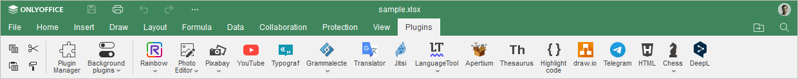
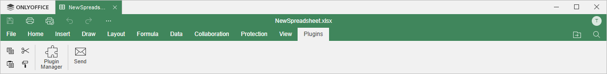

Kartica Plugins
Kartica Plugins u Spreadsheet Editor-u omogućava pristup naprednim funkcijama za uređivanje korišćenjem dostupnih komponenti trećih strana.
Odgovarajući prozor Online Spreadsheet Editor-a:

Odgovarajući prozor Desktop Spreadsheet Editor-a:

Dugme Plugin Manager omogućava otvaranje prozora u kome možete pregledati i upravljati svim instaliranim dodacima i dodavati sopstvene.
Dugme Background Plugins omogućava prikaz liste dodataka koji rade u pozadini. Ovde ih možete aktivirati ili deaktivirati uključivanjem/isključivanjem odgovarajućih prekidača, kao i podesiti njihova podešavanja klikom na dugme More pored željenog dodatka.
Počevši od ONLYOFFICE Docs verzije 8.2, editori podrazumevano ne dolaze sa instaliranim dodacima. Dodaci se instaliraju putem Plugin Manager-a.
Trenutno su dostupni sledeći dodaci:
- Send omogućava slanje tabele putem e-pošte korišćenjem podrazumevanog desktop klijenta za e-poštu (dostupno samo u desktop verziji),
- Highlight code omogućava isticanje sintakse koda izborom odgovarajućeg jezika, stila i boje pozadine,
- Photo Editor omogućava uređivanje slika: isecanje, okretanje, rotiranje, crtanje linija i oblika, dodavanje ikona i teksta, učitavanje maske i primenu filtera kao što su Grayscale, Invert, Sepia, Blur, Sharpen, Emboss itd.,
- Thesaurus omogućava pretragu sinonima i antonima reči i zamenu izabranim terminom,
-
Translator omogućava prevođenje izabranog teksta na druge jezike,
Napomena: ovaj dodatak ne radi u Internet Explorer-u.
- YouTube omogućava ugrađivanje YouTube video-snimaka u vašu tabelu.
Nekoliko vizuelnih dodataka može se dodati u dokument. Dodati dodaci biće prikazani kao odgovarajuće ikone na levom panelu.
Da biste saznali više o dodacima, pogledajte našu API dokumentaciju. Svi postojeći open-source primeri dodataka trenutno su dostupni na GitHub-u.